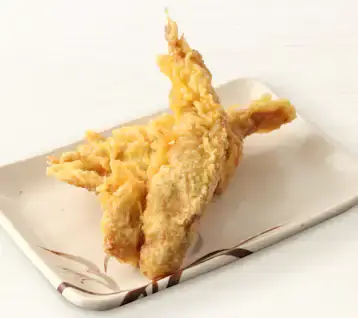

<!DOCTYPE html>
<html lang="ja">
<head>
  <meta charset="UTF-8">
  <title>和風うどんメニュー</title>
  <style>
    body {
      font-family: "Yu Mincho", "Hiragino Mincho Pro", serif;
      background: #f9f5ee;
      color: #333;
      padding: 30px;
      margin: auto;
      line-height: 1.6;
      max-width: 1000px;
    }
    h1 {
      text-align: center;
      border-bottom: 3px double #8b0000;
      padding-bottom: 10px;
      margin-bottom: 30px;
      font-size: 2em;
      color: #8b0000;
    }
    .section-title {
      font-size: 1.6em;
      font-weight: bold;
      color: #8b0000;
      margin-top: 40px;
      text-align: center;
    }
    .menu-grid {
      display: grid;
      grid-template-columns: repeat(2, 1fr);
      gap: 20px;
    }
    .menu-item {
      background: #fffaf5;
      border: 1px solid #e0d6c9;
      border-left: 8px solid #c89e6d;
      border-radius: 8px;
      padding: 15px;
    }
    .menu-name {
      font-size: 1.3em;
      font-weight: bold;
      color: #8b0000;
      margin-bottom: 6px;
    }
    
  transition: transform 0.3s ease;}
    .lang {
      margin-left: 1em;
      margin-bottom: 4px;
    }
    @media print {
      body { width: 297mm; height: 210mm; }
    }
  .menu-img:hover {
  transform: scale(1.05);
}

</head>
<body>
  <h1>和風うどんメニュー（多言語対応）</h1>

  <div class="section-title">うどんメニュー / Udon Menu / 乌冬面菜单 / 우동 메뉴</div>
  <div class="menu-grid">
    <div class="menu-item">
      
      <div class="menu-name">● かけうどん - ¥800</div>
      出汁の香り引き立つ、うどんの原点。<br>
      <div class="lang">EN: A simple bowl to savor the essence of dashi broth.</div>
      <div class="lang">CN: 最能品味高汤本味的基础乌冬。</div>
      <div class="lang">KR: 담백한 국물 맛을 즐길 수 있는 기본 우동.</div>
    </div>
    <div class="menu-item">
      
      <div class="menu-name">● きつねうどん - ¥1000</div>
      甘く煮たお揚げが心を和ませる一杯。<br>
      <div class="lang">EN: Sweet tofu topping brings warmth to your soul.</div>
      <div class="lang">CN: 甜甜豆皮唤起温暖心情。</div>
      <div class="lang">KR: 달콤한 유부로 마음이 포근해지는 우동.</div>
    </div>
    <div class="menu-item">
      
      <div class="menu-name">● 天ぷらうどん - ¥1700</div>
      サクッと香ばしい天ぷらが彩る一椀。<br>
      <div class="lang">EN: Crispy tempura meets smooth udon in harmony.</div>
      <div class="lang">CN: 香酥天妇罗与乌冬相得益彰。</div>
      <div class="lang">KR: 바삭한 튀김과 쫄깃한 면발의 조화.</div>
    </div>
    <div class="menu-item">
      
      <div class="menu-name">● かき揚げうどん - ¥1200</div>
      野菜の旨味がギュッと詰まった一杯。<br>
      <div class="lang">EN: A crispy fritter of veggies and shrimp adds rich flavor.</div>
      <div class="lang">CN: 丰富蔬菜与虾仁炸饼添香增味。</div>
      <div class="lang">KR: 야채와 새우튀김으로 풍미 가득한 한 그릇.</div>
    </div>
    <div class="menu-item">
      
      <div class="menu-name">● 肉うどん - ¥2000</div>
      甘辛の牛肉が食欲をそそる人気うどん。<br>
      <div class="lang">EN: Sweet-savory beef makes every bite satisfying.</div>
      <div class="lang">CN: 牛肉香浓，咬一口满满满足感。</div>
      <div class="lang">KR: 달콤한 소고기로 든든하게 채워주는 우동.</div>
    </div>
    <div class="menu-item">
      
      <div class="menu-name">● とり天うどん - ¥1800</div>
      鶏の旨味と天ぷらの香ばしさが絶妙。<br>
      <div class="lang">EN: Chicken tempura adds a hearty touch.</div>
      <div class="lang">CN: 炸鸡天妇罗，酥脆又满足。</div>
      <div class="lang">KR: 닭튀김의 고소함이 살아있는 우동.</div>
    </div>
    <div class="menu-item">
      
      <div class="menu-name">● かすうどん - ¥2000</div>
      関西名物！香ばしい油かすがクセになる。<br>
      <div class="lang">EN: Kansai-style udon with crispy beef fat. Addictive flavor!</div>
      <div class="lang">CN: 关西特产，香脆牛油渣令人上瘾。</div>
      <div class="lang">KR: 간사이 명물, 고소한 기름 부스러기 풍미.</div>
    </div>
    <div class="menu-item">
      
      <div class="menu-name">● 釜玉うどん - ¥900</div>
      卵と醤油が絡む、茹でたての贅沢。<br>
      <div class="lang">EN: Raw egg and soy sauce over fresh udon—rich and simple.</div>
      <div class="lang">CN: 生鸡蛋与酱油融合的绝妙滋味。</div>
      <div class="lang">KR: 갓 삶은 면에 날계란, 간장의 진한 조화.</div>
    </div>
    <div class="menu-item">
      
      <div class="menu-name">● 明太釜玉うどん - ¥1200</div>
      明太子のピリ辛が釜玉を一味アップ。<br>
      <div class="lang">EN: Spicy cod roe gives this dish a bold twist.</div>
      <div class="lang">CN: 明太子的微辣令人回味无穷。</div>
      <div class="lang">KR: 매콤한 명란이 더해져 특별한 맛.</div>
    </div>
    <div class="menu-item">
      
      <div class="menu-name">● 卵とじうどん - ¥1500</div>
      ふわふわ卵で包む、やさしい味わい。<br>
      <div class="lang">EN: Fluffy egg wraps the noodles in gentle warmth.</div>
      <div class="lang">CN: 鸡蛋柔软地包裹着温暖的乌冬面。</div>
      <div class="lang">KR: 부드러운 계란이 우동을 감싸 안은 포근함.</div>
    </div>
    <div class="menu-item">
      
      <div class="menu-name">● 肉カレーうどん - ¥2500</div>
      旨味たっぷり！カレーと牛肉の黄金コンビ。<br>
      <div class="lang">EN: A rich curry broth with tender beef—ultimate comfort.</div>
      <div class="lang">CN: 浓郁咖喱与牛肉的完美结合。</div>
      <div class="lang">KR: 진한 카레와 소고기의 황금 조합.</div>
    </div>
</div>


  <div class="section-title">トッピングメニュー / Topping Menu / 装饰配料 / 토핑 메뉴</div>
  <div class="menu-grid">
    <div class="menu-item">
      
      <div class="menu-name">● 天ぷら - ¥400</div>
      サクサクの衣が特徴。うどんとの相性も抜群です。<br>
      <div class="lang">EN: Light and crispy, the perfect topping for udon.</div>
      <div class="lang">CN: 香脆的天妇罗是乌冬的最佳搭配。</div>
      <div class="lang">KR: 바삭한 튀김은 우동과 환상의 궁합.</div>
    </div>
    <div class="menu-item">
      
      <div class="menu-name">● とり天 - ¥400</div>
      鶏肉のジューシーさと天ぷらの香ばしさが楽しめます。<br>
      <div class="lang">EN: Juicy chicken tempura full of flavor.</div>
      <div class="lang">CN: 多汁的鸡肉天妇罗，香气四溢。</div>
      <div class="lang">KR: 육즙 가득한 닭튀김이 일품.</div>
    </div>
    <div class="menu-item">
      
      <div class="menu-name">● かき揚げ - ¥500</div>
      野菜や海老の旨味が詰まったボリューム満点の一品。<br>
      <div class="lang">EN: Hearty fritter with vegetables and shrimp.</div>
      <div class="lang">CN: 丰富蔬菜和虾仁的炸什锦。</div>
      <div class="lang">KR: 야채와 새우가 듬뿍 들어간 튀김.</div>
    </div>
    <div class="menu-item">
      
      <div class="menu-name">● かす - ¥1000</div>
      香ばしく揚げた牛脂がクセになる関西の味。<br>
      <div class="lang">EN: Fried beef fat with savory richness – a Kansai specialty.</div>
      <div class="lang">CN: 香酥牛油渣，令人难以忘怀的关西风味。</div>
      <div class="lang">KR: 고소하게 튀긴 소기름, 간사이 대표 별미.</div>
    </div>
    <div class="menu-item">
      
      <div class="menu-name">● 卵 - ¥100</div>
      とろっとまろやか、うどんやご飯にぴったり。<br>
      <div class="lang">EN: Smooth and mellow – a perfect match for noodles or rice.</div>
      <div class="lang">CN: 口感柔滑，搭配乌冬或米饭都很合适。</div>
      <div class="lang">KR: 부드럽고 고소해 우동이나 밥에 잘 어울림.</div>
    </div>
  </div>

  <div class="section-title">その他メニュー / Other Items / 其他菜单 / 기타 메뉴</div>
  <div class="menu-grid">
    <div class="menu-item">
      
      <div class="menu-name">● おにぎり各種 - ¥500</div>
      ごはんと具材のシンプルでおいしい組み合わせ。<br>
      <div class="lang">EN: Classic rice balls with savory fillings – a Japanese staple.</div>
      <div class="lang">CN: 简单又美味的饭团，是日本饮食的经典之选。</div>
      <div class="lang">KR: 간편하게 즐기는 일본 전통 주먹밥.</div>
    </div>
    <div class="menu-item">
      
      <div class="menu-name">● あげもち - ¥500</div>
      外はカリッと中はもちもち。香ばしさがクセになる一品。<br>
      <div class="lang">EN: Crispy outside, chewy inside. Irresistibly fragrant fried mochi.</div>
      <div class="lang">CN: 外酥里糯，香味诱人的炸年糕。</div>
      <div class="lang">KR: 겉바속촉, 고소한 튀긴 떡.</div>
    </div>
    <div class="menu-item">
      
      <div class="menu-name">● みたらし団子（小） - ¥300</div>
      甘辛いタレがたっぷり絡んだ、食べやすいサイズの和スイーツ。<br>
      <div class="lang">EN: Small skewers of rice dumplings in sweet soy glaze.</div>
      <div class="lang">CN: 浇上甜咸酱汁的小串团子。</div>
      <div class="lang">KR: 달콤짭조름한 양념이 잘 스며든 작은 당고.</div>
    </div>
    <div class="menu-item">
      
      <div class="menu-name">● みたらし団子（大） - ¥500</div>
      食べごたえ満点の特大サイズ！和の風味をたっぷり味わえる一串。<br>
      <div class="lang">EN: Large rice dumplings smothered in savory-sweet sauce.</div>
      <div class="lang">CN: 大份量的团子，满满的和风美味。</div>
      <div class="lang">KR: 든든한 크기의 달콤짭조름한 당고.</div>
    </div>
    <div class="menu-item">
      
      <div class="menu-name">● いくらおにぎり - ¥1000</div>
      ぷちぷちとした食感のいくらを贅沢に使った特別なおにぎり。<br>
      <div class="lang">EN: Luxurious rice ball topped with juicy salmon roe.</div>
      <div class="lang">CN: 奢华的饭团，满载弹牙的鲑鱼子。</div>
      <div class="lang">KR: 알알이 톡톡 터지는 연어알이 올라간 고급 주먹밥.</div>
    </div>
  </div>

</body>
</html>
